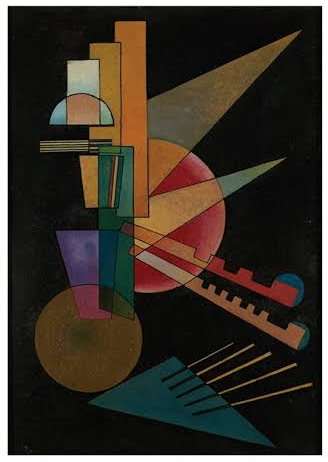

A Computer Scientist's View of the Physical World
Simulations run on programs that only approximate the physics, and those programs can fail. A new tool proves, before such a program runs, how it will behave across a whole range of starting conditions.

When one driver brakes on a crowded highway, a wave of red lights travels backward through the traffic. A flood moving down a river follows the same family of equations. Engineers simulate waves like these on computers to decide where to put an on-ramp or which neighborhoods to evacuate.
Scientists have tested those equations against experiments for generations. But the computer doesn't run the equation. It runs a program that approximates it, chopping the road or river into points and time into steps. That program can get the wave wrong. It can flatten the wave, add ripples that aren't in the physics, or let small errors grow until it crashes.
These problems usually surface only after the fact, once a large simulation has crashed or produced something strange. By then, hours or even days of computing time may already be spent. That raises a natural question: Could we rule out such failures before the program ever runs?
Jacob Laurel, a computer scientist at the Georgia Institute of Technology, thinks we can. With Ignacio Laguna of Lawrence Livermore National Laboratory and Jan Hückelheim of Argonne National Laboratory, he built a tool called Phocus that checks a simulation's program before it runs. Instead of testing one run after another, Phocus proves guarantees about every run the program could make from a whole range of starting conditions. The software won a Distinguished Artifact Award at OOPSLA 2025, a major programming-languages conference.
Asked how he would explain the work to middle schoolers, Laurel reached for a rope. Flick one end and anyone can watch the wave travel. But how would you write a program that says where the wave will be a second later? “It's really just two for loops,” Laurel said. “One for space, one for time.” Phocus proves things about what those two loops will do.
- ut + f(u)x = 0EquationA wave u moving through continuous space and time. The flux f encodes the physics.
- GridSpace becomes points. Time becomes steps. Everything between them is gone.
- StencilEach new value is computed from a few old neighbors. The derivative has become a subtraction.
for n in T: for i in X: u[n+1][i] = stencil( u[n][i-1], u[n][i+1])LoopThe stencil, repeated at every point and every step. This is the entire solver.- ProgramArrays, arithmetic and a loop. Like any program, it can fail in ways of its own: values that grow without bound, waves that flatten, ripples that were never there.
Chopping Up a Wave
The equations Phocus studies describe things that flow, such as water down a river or cars along a highway. How fast the water or traffic moves depends on how much of it there is. That feedback is nonlinear, and it lets a smooth wave steepen into a shock, a near-vertical cliff like the wall of brake lights at the back of a traffic jam. Realistic versions rarely have solutions anyone can write down, so chopping them up is the only practical way to get an answer.
Each recipe for chopping them up, known as a finite difference scheme, makes its own compromises. One common scheme smears the wave out and shaves height off its peak. Another is more accurate but leaves ripples behind a steep front. In the simulation below, the first ends up about 40 percent shorter than it should be. The second grows more than a third taller than it started, which the equation forbids. Neither side effect comes from the physics.
Every scheme also has a speed limit, known as the CFL condition. Roughly, the wave must not travel farther in one time step than the gap between neighboring points. Break the limit, and errors can grow step after step until the numbers mean nothing. In these equations the wave's speed depends on its own height. So checking the speed limit comes down to checking that the values stay within bounds.
More digits won't fix these failures. “This is really a broad new class of numerical bugs,” Laurel said, “that extends beyond traditional floating-point errors.”
Testing won't catch them all, either. Scientists know their starting conditions only within some margin of error, so one simulation stands in for an infinite family of them. Ten thousand test runs sample a sliver of that family, and the input that breaks the program may never come up.
Phocus doesn't say how close a simulation comes to the true answer. It proves limits on what the program can compute for the whole family: how high its values can climb, how low they can fall and how much they can ripple.
A Simulation Is a Program
Laurel works in program verification, which tries to prove what software will do before it runs. His path to waves began with an email. As a graduate student, he wrote to a group at Argonne that builds tools for analyzing scientific simulations, curious how his work fit with theirs. The conversation grew into a collaboration, and it pointed him to a simple fact his field could use: A simulation is a program.
Theory and experiment earn trust for the equation. The program needs its own, and computer scientists have spent half a century building tools for exactly that. One of the most powerful is abstract interpretation. It runs a program on ranges instead of specific numbers. An ordinary simulation stores one value at each grid point. An abstract run stores a range guaranteed to contain every value that point could take, for every starting condition in the family.
If the ranges never cross a forbidden line, such as the speed limit, then no real run crosses it either. One abstract run covers infinitely many real ones.
Others had already applied such tools to solvers for heat, which are forgiving: A hot spot spreads out and softens over time. Laurel picked waves instead. Nothing in their equations smooths out a sharp front, so a solver's small mistakes travel along with the wave. The solvers were simple enough to analyze and hard enough to be worth the effort.
The hardest part, Laurel said, came before any mathematics: deciding what a proof about a simulation should say. The team translated the warnings numerical analysts use into statements about a program's variables, including these three:
- Robust ranges. Every point stays within a certified range, for every starting condition in the margin.
- Bounded total variation. Add up every rise and drop along the wave. Spurious ripples push that score up, and Phocus proves a ceiling on it.
- The CFL condition. The speed limit holds at every point at every step.
The last one is a familiar object in Laurel's own field. “So really,” he said, “it's a loop invariant.”
Flat Enough
An abstract interpreter comes with a rulebook. For each operation, such as addition or multiplication, a rule says how to push a range through it. The standard approach runs a solver's update formula through the rulebook one operation at a time. Each rule is slightly conservative, and in a nonlinear formula the extra width compounds step after step. On one test equation, the standard ranges crossed the speed limit at step 19, though the simulation itself never did.
Laurel's fix was to treat the whole update formula as a single object. In the simplest scheme, each new value depends on two neighbors. Picture the formula as a surface, with the two old values marking a spot on the floor and the new value as the height above it. The surface is curved, but over the small patch that matters at any one step, it is nearly flat.
Phocus fits a plane through samples of the surface. It then computes the farthest the surface ever strays from that plane — call it D — and thickens the plane by D on each side. The true surface is guaranteed to lie inside. The fit only has to be a good guess; the guarantee comes entirely from D. Finding D exactly is hard in general, but the structure of these schemes lets the team compute it. “This is where continuous optimization saves the day,” Laurel said.
The standard analysis loses a little precision at every operation. Phocus loses it once per formula and measures the loss exactly. It also carries less bookkeeping from step to step, which makes it faster.
Nineteen Tests
With no existing benchmark to test against, the team built one. It has six equations, four of them modeling real flows such as flood waves and traffic, run in 19 configurations.
The standard analysis failed outright on five of the 19, producing infinite ranges or overflowing. Phocus produced bounds on all of them. Where both finished, Phocus was faster every time and usually tighter. On one run of Burgers' equation, a classic model of nonlinear flow, it bounded the total variation at about 11; the standard analysis managed only about 300. One 80-step run took Phocus 37 seconds and the standard analysis more than 10 minutes.
The proofs were also snug. In 16 of the 19 configurations, Phocus's ranges were on average only 10 to 40 percent wider than the spread of 10,000 random runs. In the longest test, Phocus certified the speed limit for all 280 steps in about half an hour. The standard analysis lost its proof at step 75.
Back Up the Hourglass
Phocus is still narrow in scope. It handles three hand-picked schemes. It assumes exact arithmetic, so its guarantees don't yet cover floating-point round-off. And the tests are small: one dimension of space, 20 grid points and a few hundred time steps. The simulations behind weather and storm-surge forecasts run on far bigger grids in three dimensions. But they, too, begin as equations and end as loops over arrays.
“Research is like an hourglass,” Laurel said. “You funnel down so you can focus. Once you really understand the problem, you funnel back up.” Phocus sits at the narrow point. Next he wants to try finite volume schemes, the approach behind many fluid-dynamics codes engineers use in practice, and to take the plane-fitting technique to other problems in scientific computing.
Scientists have spent generations asking whether their equations describe the physical world. A computer scientist asks a narrower question about the programs that solve them: Across every starting condition in a range, what can this program do? Phocus now answers with a proof.